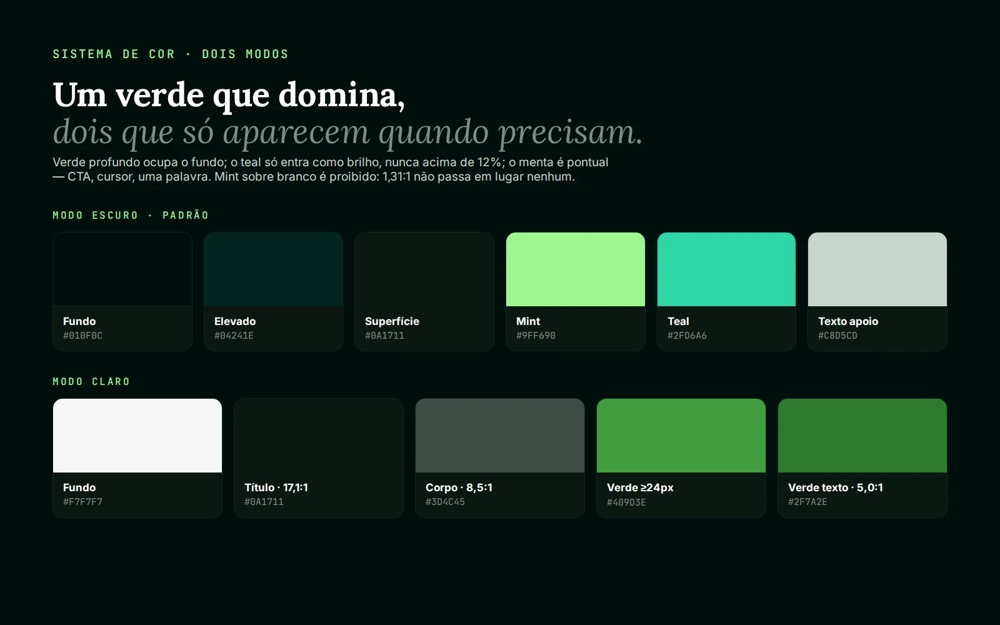
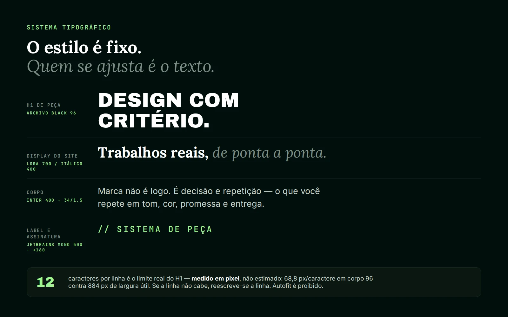
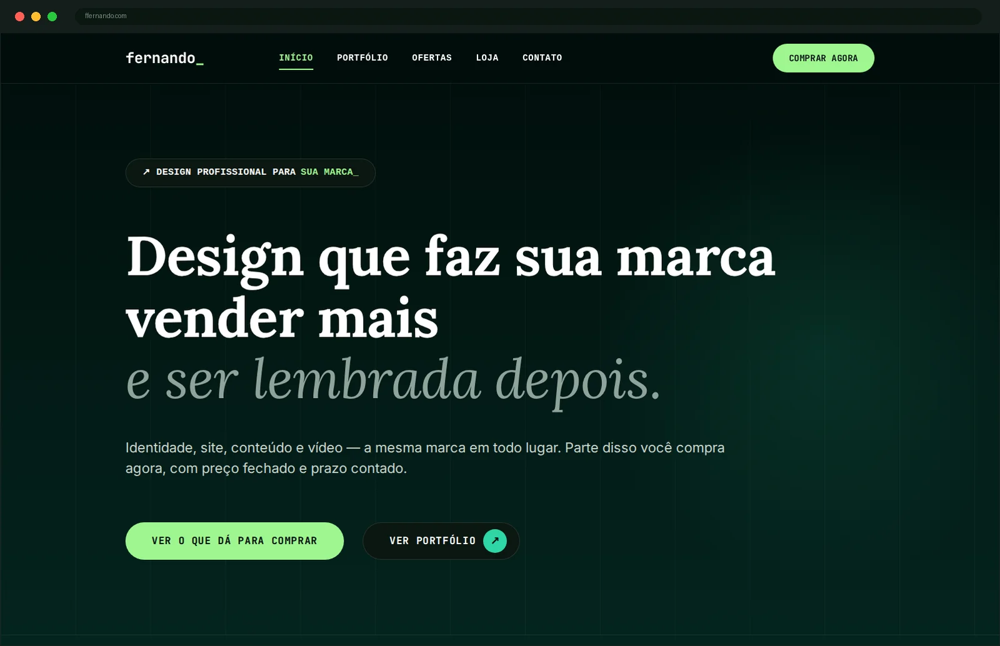
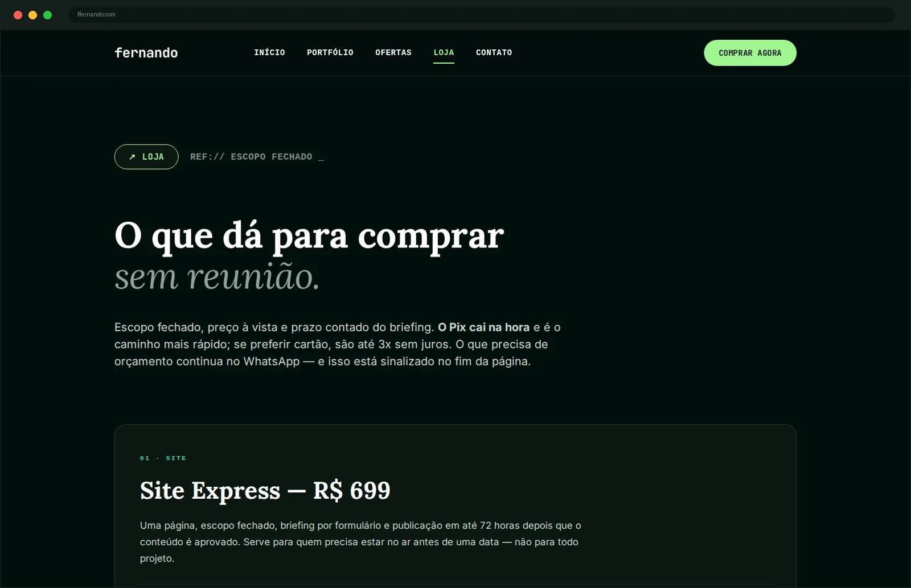
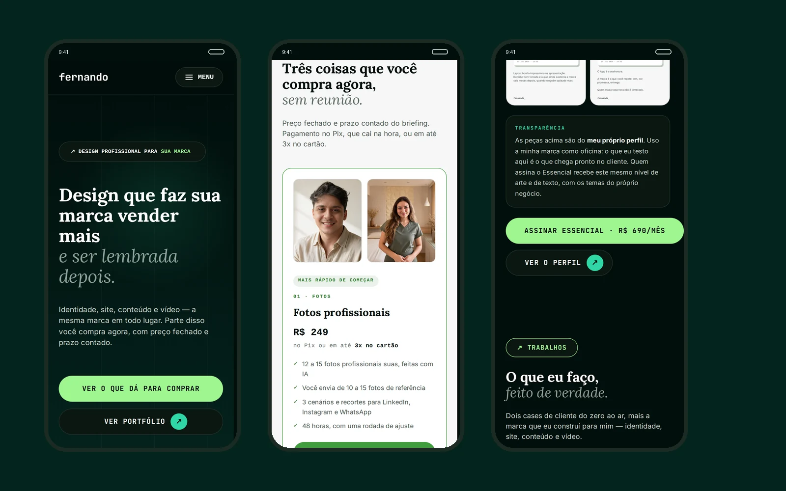
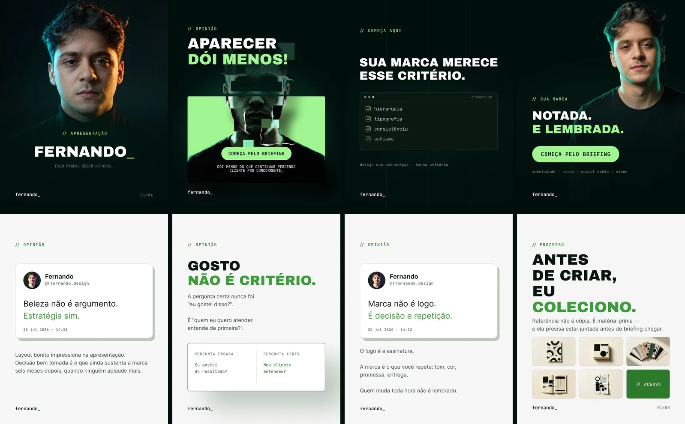
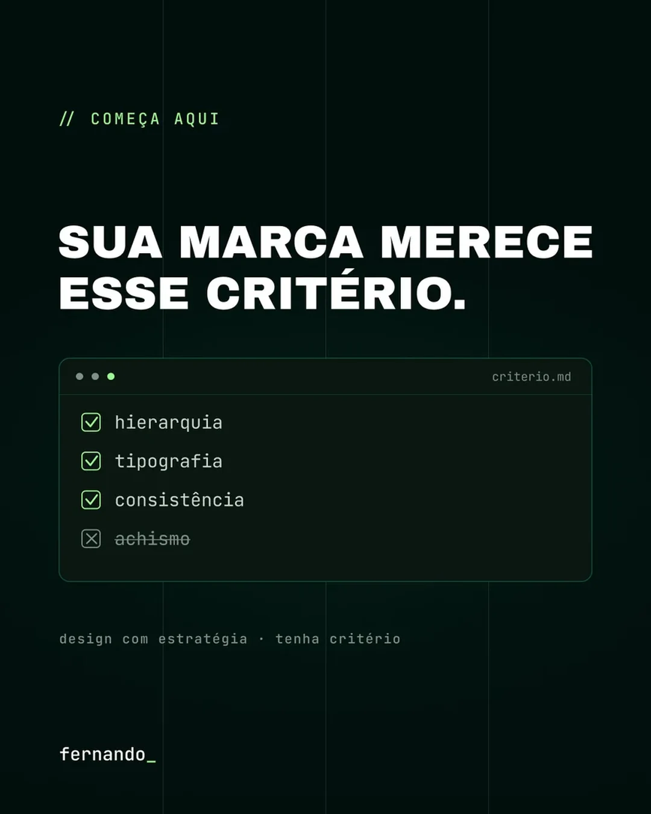
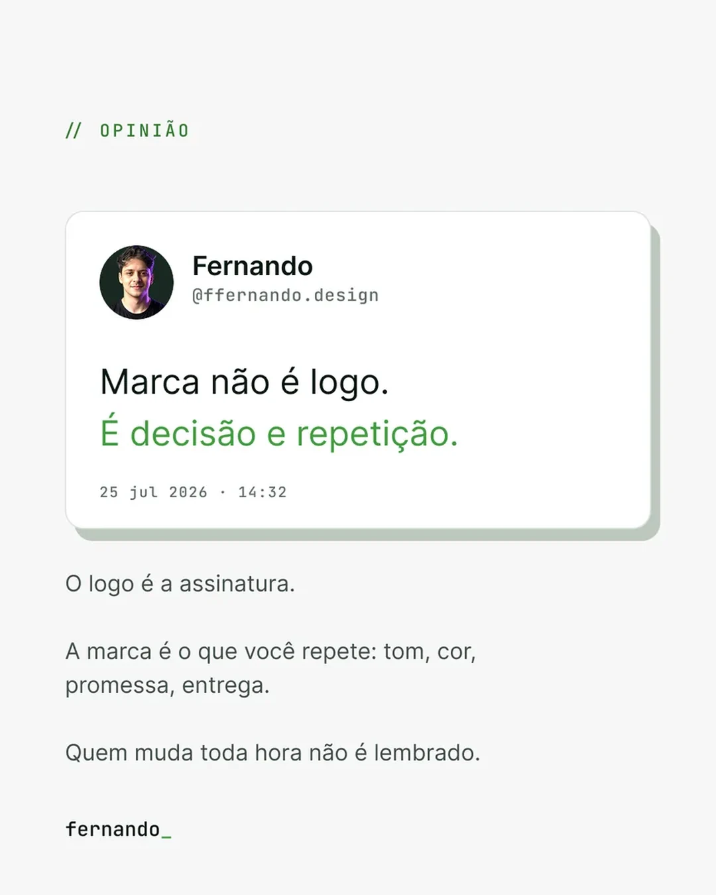

fernando_ o primeiro cliente sou eu.

O DESAFIO
Designer sem marca própria vende hora, não critério. Eu digo aos clientes que marca é decisão e repetição — então a minha precisava ser a primeira prova disso, não um perfil bonito com um logo em cima. E precisava resolver um segundo problema ao mesmo tempo: vender sem reunião. Orçamento por formulário, "consulte-nos" e três trocas de mensagem antes de dizer um preço matam projeto pequeno.
A SOLUÇÃO
Um sistema em vez de um logo, e um site que é portfólio e loja na mesma página. O símbolo é o underscore — o cursor que pisca, de quem está sempre no meio de um trabalho — em monoespaçada, porque a origem é dado e código, não ateliê. Do wordmark saíram paleta em dois modos com contraste medido, escala tipográfica com limite de linha em pixel e um sistema de peças com séries fixas.
A ENTREGA
Marca no ar em domínio próprio: 13 páginas, loja com oito produtos, checkout em Pix e cartão, preço e prazo escritos na vitrine, pixel e eventos de conversão configurados. Mais um sistema de conteúdo que já produz — séries com regra própria, arte 1080×1350 e peça animada. Tudo isso é este site ↗
O QUE FOI CONSTRUÍDO
A MARCA


O SITE E A LOJA



O SISTEMA DE CONTEÚDO



AS DECISÕES
O underscore é o símbolo
Não existe ícone ao lado do nome. O que carrega a marca é o cursor que pisca depois dele — o sinal de quem está no meio de um trabalho, não de quem terminou. Vem em monoespaçada de propósito: minha origem é dado, planilha e código, e a marca não finge um passado de ateliê que eu não tenho.
Preço na vitrine, não na reunião
A loja publica valor, escopo e prazo antes de qualquer conversa: "R$ X no Pix ou em até 3x no cartão", site no ar em até 72 horas após o conteúdo aprovado. Isso perde o cliente que só queria sondar — e é exatamente o ponto. O que chega no WhatsApp já sabe quanto custa, e a conversa começa no briefing em vez de começar no orçamento.
Contraste medido antes de a paleta fechar
O menta é a cor mais reconhecível do sistema e por isso a mais perigosa: sobre branco dá 1,31:1 e foi proibido como texto — vive só sobre o verde profundo, em CTA e detalhe. Cada par do modo claro entrou com o número ao lado: título 17,1:1, corpo 8,5:1, verde de texto 5,0:1. Medir na origem custa uma tarde; descobrir na publicação custa o layout inteiro.
O estilo é fixo, quem se ajusta é o texto
O H1 das peças tem 12 caracteres por linha — não é estimativa, é medição: 68,8 px por caractere em corpo 96 contra 884 px de largura útil. Quando a frase não cabe, a frase é reescrita. Autofit e shrink-to-fit são proibidos, porque uma peça com corpo reduzido para caber entrega, na miniatura do feed, exatamente a hesitação que ela deveria esconder.
Séries, não posts avulsos
O conteúdo é organizado em séries com regra própria — REPERTÓRIO, FERRAMENTAS, COMO EU FARIA — cada uma com label, número de pranchetas e assinatura fixos. Série é o que transforma volume em memória: quem viu a segunda edição reconhece a quinta sem ler o nome, e eu deixo de decidir do zero o que postar toda semana.